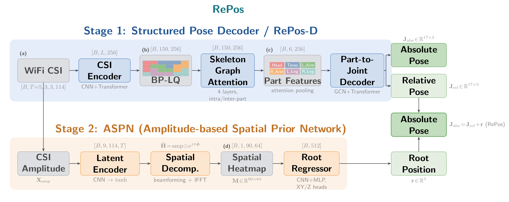
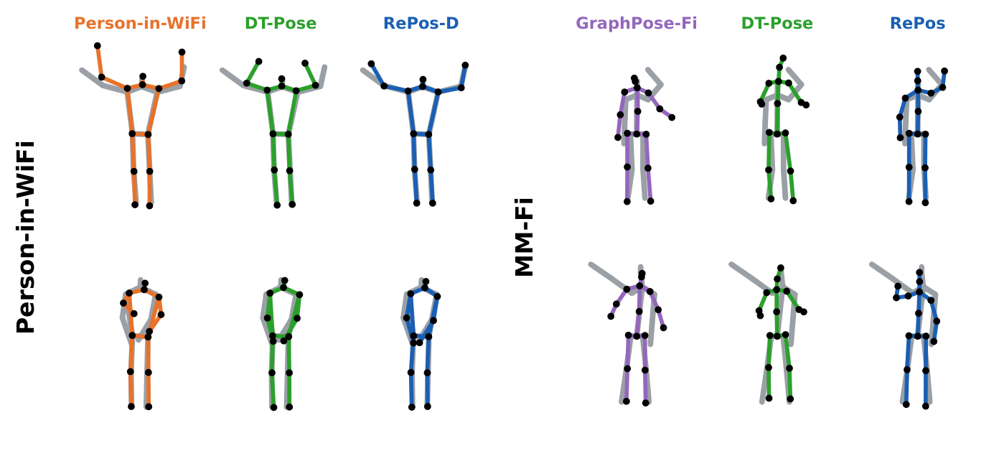

RePos overview. Stage 1 (Structured Pose Decoder). WiFi CSI is encoded and grouped into body-part latent queries (BP-LQ), refined by Skeleton Graph Attention (SGA) along the kinematic tree, and decoded into a room-agnostic relative pose. Stage 2 (ASPN). A separate Amplitude-based Spatial Prior Network turns CSI amplitude into a spatial heatmap through a differentiable spatial-decomposition module and regresses the root position. Relative pose and root combine into the absolute pose; a single-stage variant, RePos-D, regresses the absolute pose directly for in-domain deployment.
Device-free 3D human pose estimation using commodity WiFi Channel State Information (CSI) enables privacy-preserving and illumination-robust human sensing, but its deployment is limited by poor cross-environment generalization. Unlike images, CSI measurements do not have a spatially localized correspondence to body parts and are heavily affected by multipath propagation, causing models that regress absolute poses to entangle body structure with environment-specific location cues.
Within a single environment this coupling is benign: an end-to-end absolute-pose variant, RePos-D, already achieves state-of-the-art accuracy on Person-in-WiFi-3D (86.9 mm MPJPE, a 3.4% gain over the previous best WiFi method). Across environments, however, the same model overfits position and degrades sharply. We therefore propose RePos, a factorized framework that separates root-relative pose estimation from root localization. By preventing absolute-pose supervision from affecting the structure branch, RePos keeps its pose representation environment-stable: CSI features are grouped into body-part latent queries that skeleton-guided modeling refines into the pose, while a separate amplitude-based network estimates the root position through a differentiable spatial-decomposition module.
Under the strict MM-Fi cross-environment protocol, RePos achieves MPJPEs of 254.4–296.1 mm, a 10–21% reduction over existing WiFi-based methods. The improvement is consistent across activity protocols, leave-one-environment-out splits, and leakage-free few-shot transfer. Analysis of the learned features shows that relative-pose representations remain largely position-agnostic, while root localization retains environment dependence: structure transfers across rooms, absolute placement does not.
RePos predicts a root-relative pose and a root position through separate branches, so absolute-position supervision never reaches the structure branch. This avoids coordinate overfitting — entangling body configuration with the training room's position cues — and lets the structural representation transfer to unseen environments.
CSI features are compressed into 150 body-part latent queries (BP-LQ) and refined by Skeleton Graph Attention (SGA), which passes messages along the kinematic tree. The result is a compact, anatomically organized representation that decodes into a room-agnostic relative pose.
A separate Amplitude-based Spatial Prior Network estimates the root position from CSI amplitude through a differentiable spatial-decomposition module — calibration-free and without relying on noisy commodity phase — and is the part that a few target frames can recalibrate for a new room.
| Method | MPJPE (mm) ↓ | PA-MPJPE (mm) ↓ |
|---|---|---|
| MetaFi++ (IoT-J'23) | 347.5 | 121.5 |
| HPE-Li (ECCV'24) | 361.1 | 105.6 |
| DT-Pose (EIS'26) | 330.4 | 105.4 |
| GraphPose-Fi (ICASSP'26) | 355.8 | 109.6 |
| RePos (ours) | 296.1 | 102.0 |
MM-Fi Setting-3 cross-environment (train E01–E03, test on the unseen room E04), Protocol 3 (all 27 activities). Across the three activity protocols RePos lowers MPJPE by 10–21% over the strongest baseline.
| Method | MPJPE (mm) ↓ | PA-MPJPE (mm) ↓ |
|---|---|---|
| MetaFi++ (IoT-J'23) | 132.0 | 75.8 |
| HPE-Li (ECCV'24) | 120.2 | 69.5 |
| Person-in-WiFi-3D (CVPR'24) | 91.7 | — |
| DT-Pose (EIS'26) | 90.0 | 58.7 |
| RePos-D (ours) | 86.9 | 57.5 |
Person-in-WiFi-3D, in-domain (training and testing in the same environment). The direct variant RePos-D is state of the art — 86.9 mm MPJPE, a 3.4% gain over the best prior WiFi method (DT-Pose) and 5.2% over the dataset's native baseline. Within a fixed room, regressing absolute coordinates directly is already effective; the factorized RePos targets the cross-environment regime above.

Each method's prediction (color) is overlaid on the root-centered ground truth (gray). In-domain on Person-in-WiFi-3D (left), RePos-D is the most faithful; under the harder cross-environment MM-Fi setting (right), RePos still tracks the overall pose while the baselines deviate more in the limbs.
@article{hou2026repos,
title = {RePos: Relative-to-Absolute Output Factorization for
Cross-Environment WiFi-Based 3D Human Pose Estimation},
author = {Hou, Zhangcheng and Ohtsuki, Tomoaki},
journal = {arXiv preprint arXiv:2607.02986},
year = {2026}
}